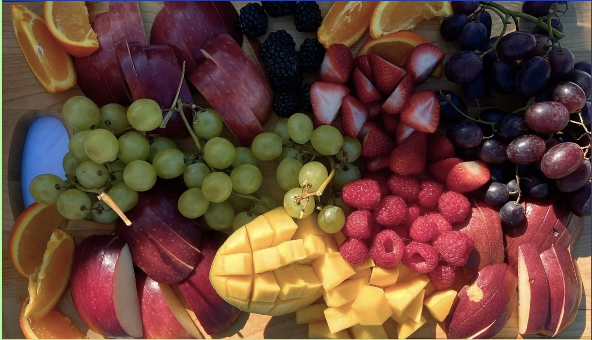
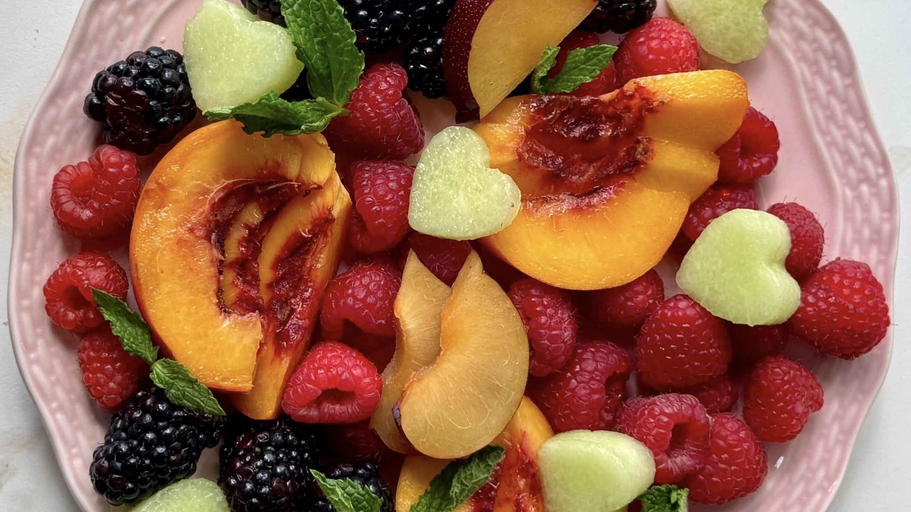

Fruit charcuterie is a fun and easy way to serve different kinds of fruit. You can use fruits like strawberries, grapes, blueberries, pineapple, and watermelon. The fruit is usually arranged on a board to make it look colorful and appealing. You can also add things like chocolate or yogurt dip to make it more interesting.

Red fruits in this platter
| Red | Strawberries | Raspberries | Apples | Grapes |
| Other Colors | Mangos | Oranges | Green Grapes | Blackberries |
Fruit charcuterie is great for parties, holidays, or just hanging out with friends. One of the best things about it is that you can choose whatever fruits you like or have available. It is also a healthier snack option while still being sweet and enjoyable. Overall, fruit charcuterie is simple to make and can be a fun addition to almost any event.

Fruit in the image above:
- Peaches
- Raspberries
- Melon
- Blackberries
Find a recipe here
Use this recipe if you want to add some dips!